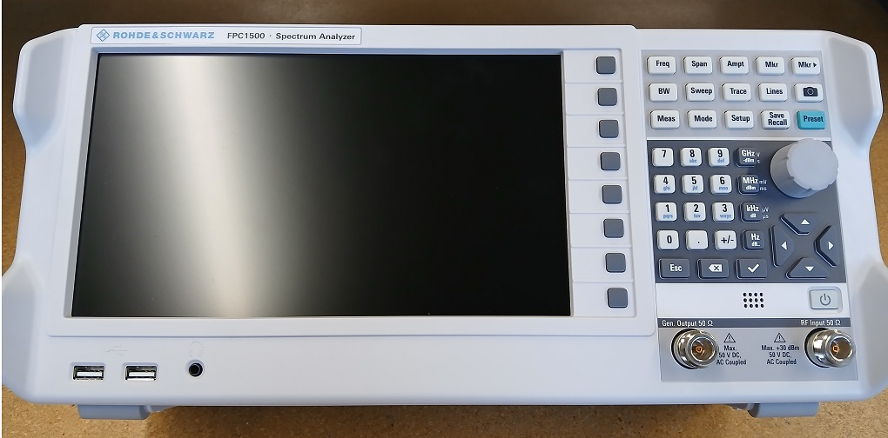
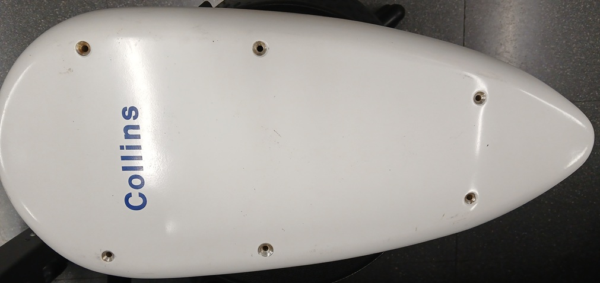
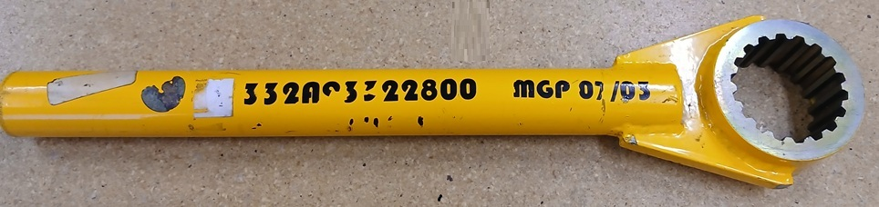
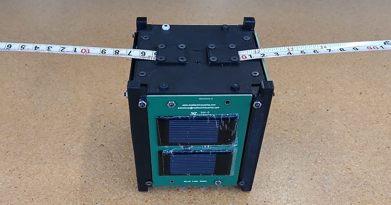
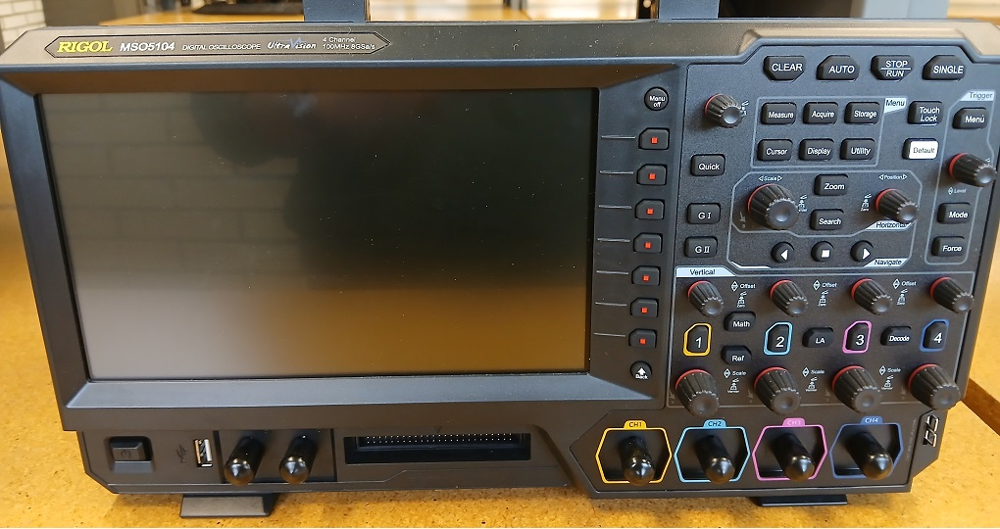
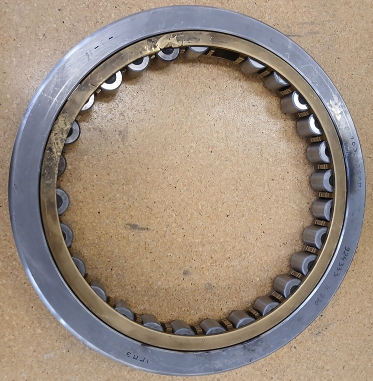
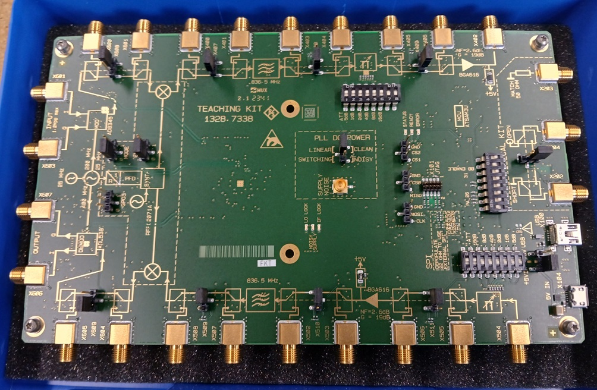
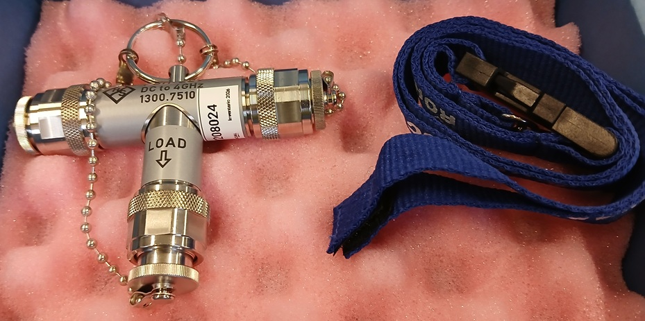

Coordinación de Ingeniería Aeroespacial - UNAM
14 tipos de activos →
1 tipos de activos →
1 tipos de activos →
13 tipos de activos →
16 tipos de activos →
29 tipos de activos →
1 tipos de activos
3 tipos de activos

Inventario: LY105324

Inventario: LY802526

Inventario: LY808226

Inventario: LY105424, LY105524, LY105624, LY105724, LY105824, LY105924
Cantidad: 6

Inventario: LY100724, LY100824, LY100924
Cantidad: 3

Inventario: LY808326

Inventario: LY208324, LY208424
Cantidad: 2

Inventario: LY208024